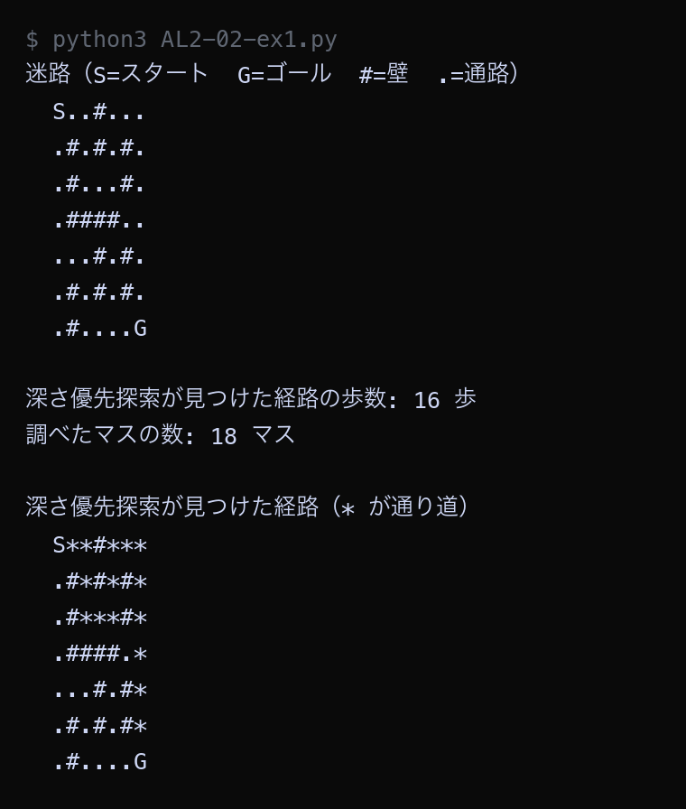
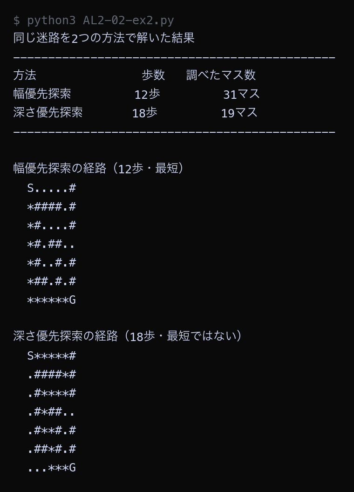

例題
例題1から例題4までのコードを実行してください。 第1回と同じように、まず作業フォルダを用意します。
VS Code でフォルダとファイルを用意する
Step 1: 作業フォルダを作る
- デスクトップに AL2 という名前のフォルダを作る（後期の授業ではずっと同じフォルダを使う）
- AL2 フォルダの中に No02 という名前のフォルダを作る
└── AL2/
├── No01/ ← 前回のファイル
└── No02/ ← 第2回はここに保存
Step 2: VS Code でフォルダを開く
- Visual Studio Code を起動する
- メニューから 「ファイル」→「フォルダーを開く」を選ぶ
- Step 1 で作った AL2/No02 フォルダを選んで開く
左側のエクスプローラーに No02 フォルダの中身が表示される（最初は空）。
Step 3: 例題ごとにファイルを作って実行する
- 左側エクスプローラーの No02 の横にある 新しいファイルアイコンをクリック
- ファイル名を入力して Enter（例題1なら
AL2-02-ex1.py） - 例題のコードブロック右上の コピーボタンをクリック
- VS Code の編集画面に 貼り付ける（Ctrl+V / Cmd+V）
- 保存する（Ctrl+S / Cmd+S）
- 右上の ▷（再生ボタン）をクリックして実行する
今回作るファイル: AL2-02-ex1.py, AL2-02-ex2.py, AL2-02-ex3.py, AL2-02-ex4.py
今回のキーワード
| 用語（読み方） | 説明 |
|---|---|
| 深さ優先探索 ふかさゆうせんたんさく / DFS | 行き止まりに当たるまで一方向へ進み、行き止まりなら1つ戻って別の道を試す探し方。見つかる道は最短とはかぎらない。 |
| スタック stack | あとから入れたものを先に取り出す入れもの。積み重ねた本と同じ。Pythonのリストでは append() で入れて pop() で取り出す。 |
| キュー queue | 先に入れたものを先に取り出す入れもの。レジの行列と同じ。Pythonでは deque の append() と popleft() を使う。 |
| 到達可能性 とうたつかのうせい / reachability | 「ゴールへ行けるかどうか」だけを判定すること。最短の道は要らないので、深さ優先探索でも十分な場合が多い。 |
| トレードオフ trade-off | 一方を良くすると他方が悪くなる関係。幅優先探索と深さ優先探索は「道の短さ」と「調べる手間」がトレードオフの関係にある。 |
深さ優先探索で迷路を解く
第1回の例題3で使った迷路を、深さ優先探索で解きます。 幅優先探索のコードと見比べると、変わっているのはメモから取り出す行だけです。
| 探索方法 | メモの入れもの | 取り出す命令 | 取り出す場所 |
|---|---|---|---|
| 幅優先探索 | deque（キュー） | queue.popleft() | いちばん古い行 |
| 深さ優先探索 | list（スタック） | stack.pop() | いちばん新しい行 |
Python ── AL2-02-ex1.py # 深さ優先探索（ふかさゆうせんたんさく）で迷路を解く # 幅優先探索との違いは「メモのどこを読むか」だけ。 # 幅優先探索: いちばん古い行を読む → popleft() # 深さ優先探索: いちばん新しい行を読む → pop() # S = スタート、G = ゴール、# = 壁、. = 通路 maze = [ "S.....#", ".####.#", ".#....#", ".#.##..", ".#..#.#", ".##.#.#", "......G", ] rows = len(maze) cols = len(maze[0]) for r in range(rows): for c in range(cols): if maze[r][c] == "S": start = (r, c) if maze[r][c] == "G": goal = (r, c) print("迷路（S=スタート G=ゴール #=壁 .=通路）") for line in maze: print(" " + line) print() # --- 深さ優先探索 --- stack = [start] # これから調べる場所を書いたメモ came_from = {start: None} # 「その場所へ、どこから来たか」の記録 visited_order = [] # 調べた順番を記録する while len(stack) > 0: current = stack.pop() # メモのいちばん新しい行を読んで消す visited_order.append(current) if current == goal: break r, c = current for dr, dc in [(-1, 0), (1, 0), (0, -1), (0, 1)]: nr = r + dr nc = c + dc if nr < 0 or nr >= rows or nc < 0 or nc >= cols: continue if maze[nr][nc] == "#": continue if (nr, nc) in came_from: continue came_from[(nr, nc)] = current stack.append((nr, nc)) # --- ゴールからスタートへ逆にたどって経路を復元する --- path = [] node = goal while node is not None: path.append(node) node = came_from[node] path.reverse() print("深さ優先探索が見つけた経路の歩数:", len(path) - 1, "歩") print("調べたマスの数:", len(visited_order), "マス") print() picture = [list(line) for line in maze] for (r, c) in path: if picture[r][c] == ".": picture[r][c] = "*" print("深さ優先探索が見つけた経路（* が通り道）") for line in picture: print(" " + "".join(line))
▶ 実行結果

深さ優先探索が見つけた道は18歩でした。第1回の例題3で幅優先探索が見つけた道は12歩だったので、6歩も長い道になっています。迷路の絵を見ると、上の行を右へ進んでから下りてくる大回りの道になっています。一方で調べたマスの数は19マスだけでした。
2つの探索を同じ迷路で比べる
幅優先探索と深さ優先探索を1つのプログラムにまとめ、同じ迷路で走らせて比べます。
search 関数の中で mode が "bfs" か "dfs" かによって、取り出す行だけを切り替えています。
Python ── AL2-02-ex2.py # 幅優先探索と深さ優先探索を、同じ迷路で走らせて比べる from collections import deque maze = [ "S.....#", ".####.#", ".#....#", ".#.##..", ".#..#.#", ".##.#.#", "......G", ] rows = len(maze) cols = len(maze[0]) for r in range(rows): for c in range(cols): if maze[r][c] == "S": start = (r, c) if maze[r][c] == "G": goal = (r, c) def neighbors(r, c): """上・下・左・右のうち、迷路の中にあって壁ではない場所を返す""" result = [] for dr, dc in [(-1, 0), (1, 0), (0, -1), (0, 1)]: nr = r + dr nc = c + dc if nr < 0 or nr >= rows or nc < 0 or nc >= cols: continue if maze[nr][nc] == "#": continue result.append((nr, nc)) return result def search(mode): """mode が "bfs" なら幅優先探索、"dfs" なら深さ優先探索で迷路を解く""" memo = deque([start]) # これから調べる場所のメモ came_from = {start: None} checked = 0 # 何マス調べたか while len(memo) > 0: if mode == "bfs": current = memo.popleft() # いちばん古い行を読む else: current = memo.pop() # いちばん新しい行を読む checked = checked + 1 if current == goal: break for next_cell in neighbors(current[0], current[1]): if next_cell in came_from: continue came_from[next_cell] = current memo.append(next_cell) path = [] node = goal while node is not None: path.append(node) node = came_from[node] path.reverse() return path, checked bfs_path, bfs_checked = search("bfs") dfs_path, dfs_checked = search("dfs") print("同じ迷路を2つの方法で解いた結果") print("-" * 46) print("方法 歩数 調べたマス数") print("幅優先探索 ", f"{len(bfs_path)-1:>4}歩", f"{bfs_checked:>10}マス") print("深さ優先探索 ", f"{len(dfs_path)-1:>4}歩", f"{dfs_checked:>10}マス") print("-" * 46) def draw(path, title): """通り道に * を付けて迷路を表示する""" picture = [list(line) for line in maze] for (r, c) in path: if picture[r][c] == ".": picture[r][c] = "*" print(title) for line in picture: print(" " + "".join(line)) print() print() draw(bfs_path, "幅優先探索の経路（12歩・最短）") draw(dfs_path, "深さ優先探索の経路（18歩・最短ではない）")
▶ 実行結果

幅優先探索は12歩・31マス調査、深さ優先探索は18歩・19マス調査という結果でした。幅優先探索は短い道を見つけるかわりに、たくさんのマスを調べています。深さ優先探索は調べるマスが少ないかわりに、遠回りの道を答えとして返しています。どちらが優れているかではなく、何がほしいかで選ぶという点が大切です。
障害物を増やした大きい迷路で比べる
迷路を15マス×15マスに大きくし、壁（障害物）を増やして同じ比較をします。 迷路が大きくなると、2つの探索の差はどう変わるかを観察してください。
Python ── AL2-02-ex3.py # 障害物を増やした大きい迷路（15マス×15マス）で、2つの探索を比べる from collections import deque maze = [ "S.............#", ".####.#####.#..", ".#....#...#.#.#", ".#.##.#.#.#.#.#", ".#.#..#.#...#..", ".#.#.##.####.#.", "...#....#....#.", ".###.####.####.", ".#...#....#...#", ".#.###.####.##.", ".#.....#......#", ".#####.#.####.#", ".....#.#.#....#", "####.#.#.#.####", ".....#...#....G", ] rows = len(maze) cols = len(maze[0]) for r in range(rows): for c in range(cols): if maze[r][c] == "S": start = (r, c) if maze[r][c] == "G": goal = (r, c) def neighbors(r, c): """上・下・左・右のうち、迷路の中にあって壁ではないマスを返す""" result = [] for dr, dc in [(-1, 0), (1, 0), (0, -1), (0, 1)]: nr = r + dr nc = c + dc if nr < 0 or nr >= rows or nc < 0 or nc >= cols: continue if maze[nr][nc] == "#": continue result.append((nr, nc)) return result def search(mode): """mode が "bfs" なら幅優先探索、"dfs" なら深さ優先探索で迷路を解く""" memo = deque([start]) came_from = {start: None} checked = 0 while len(memo) > 0: if mode == "bfs": current = memo.popleft() else: current = memo.pop() checked = checked + 1 if current == goal: break for next_cell in neighbors(current[0], current[1]): if next_cell in came_from: continue came_from[next_cell] = current memo.append(next_cell) path = [] node = goal while node is not None: path.append(node) node = came_from[node] path.reverse() return path, checked def draw(path, title): """通り道に * を付けて迷路を表示する""" picture = [list(line) for line in maze] for (r, c) in path: if picture[r][c] == ".": picture[r][c] = "*" print(title) for line in picture: print(" " + "".join(line)) print() bfs_path, bfs_checked = search("bfs") dfs_path, dfs_checked = search("dfs") print("15マス×15マスの迷路（通れるマスは全部で", rows * cols - sum(line.count("#") for line in maze), "マス）") print("-" * 46) print("方法 歩数 調べたマス数") print("幅優先探索 ", f"{len(bfs_path)-1:>4}歩", f"{bfs_checked:>10}マス") print("深さ優先探索 ", f"{len(dfs_path)-1:>4}歩", f"{dfs_checked:>10}マス") print("-" * 46) print() draw(bfs_path, "幅優先探索の経路") draw(dfs_path, "深さ優先探索の経路")
▶ 実行結果
![AL2-02-ex3.py の実行結果。15マス×15マスの迷路（通れるマスは全部で 128 マス） / ---------------------------------------------- / 方法 歩数 調べたマス数 / 幅優先探索 48歩 127マス / 深さ優先探索 64歩 76マス / ---------------------------------------------- / / 幅優先探索の経路 / S*****........# / .####*#####.#.. / .#...*#...#.#.# / .#.##*#.#.#.#.# / .#.#**#.#...#.. / .#.#*##.####.#. / ...#*...#....#. / .###*####.####. / .#***#....#...# / .#*###.####.##. / .#*****#******# / .#####*#*####*# / .....#*#*#****# / ####.#*#*#*#### / .....#***#****G / / 深さ優先探索の経路 / S***********..# / .####.#####*#.. / .#....#***#*#.# / .#.##.#*#*#*#.# / .#.#..#*#***#.. / .#.#.##*####.#. / ...#****#....#. / .###*####.####. / .#***#....#...# / .#*###.####.##. / .#*****#******# / .#####*#*####*# / .....#*#*#****# / ####.#*#*#*#### / .....#***#****G](images/a02_ex3_result.png)
幅優先探索は48歩・127マス調査、深さ優先探索は64歩・76マス調査でした。通れるマスは全部で128マスなので、幅優先探索はほぼ全部のマスを調べています。迷路が大きくなっても、「幅優先探索は道が短いが手間が重い」「深さ優先探索は手間が軽いが道が長い」という関係は変わりません。
壁のない広場で比べる
壁がまったくない広場で、2つの探索がどんな道を選ぶかを見ます。 広場は10マス×10マス、20マス×20マス、40マス×40マスの3種類を試します。
Python ── AL2-02-ex4.py # 壁のない広場で、2つの探索がどれだけ違う道を選ぶかを見る from collections import deque def search(size, mode): """size × size の壁のない広場を、左上から右下まで探索する""" start = (0, 0) goal = (size - 1, size - 1) memo = deque([start]) came_from = {start: None} checked = 0 while len(memo) > 0: if mode == "bfs": current = memo.popleft() else: current = memo.pop() checked = checked + 1 if current == goal: break r, c = current for dr, dc in [(-1, 0), (1, 0), (0, -1), (0, 1)]: nr = r + dr nc = c + dc if nr < 0 or nr >= size or nc < 0 or nc >= size: continue if (nr, nc) in came_from: continue came_from[(nr, nc)] = current memo.append((nr, nc)) path = [] node = goal while node is not None: path.append(node) node = came_from[node] path.reverse() return path, checked print("壁のない広場（左上から右下まで）") print("-" * 62) print("広さ 幅優先の歩数 幅優先の調査数 深さ優先の歩数 深さ優先の調査数") for size in [10, 20, 40]: bfs_path, bfs_checked = search(size, "bfs") dfs_path, dfs_checked = search(size, "dfs") print(f"{size:>2}×{size:<2} {len(bfs_path)-1:>8}歩 {bfs_checked:>12}マス" f" {len(dfs_path)-1:>12}歩 {dfs_checked:>12}マス") print("-" * 62) print() # 10×10 の広場で、それぞれの経路を絵にして比べる for mode, title in [("bfs", "幅優先探索の経路（最短）"), ("dfs", "深さ優先探索の経路（遠回り）")]: path, checked = search(10, mode) picture = [["." for c in range(10)] for r in range(10)] for (r, c) in path: picture[r][c] = "*" picture[0][0] = "S" picture[9][9] = "G" print(title, "／", len(path) - 1, "歩") for line in picture: print(" " + "".join(line)) print()
▶ 実行結果
![AL2-02-ex4.py の実行結果。壁のない広場（左上から右下まで） / -------------------------------------------------------------- / 広さ 幅優先の歩数 幅優先の調査数 深さ優先の歩数 深さ優先の調査数 / 10×10 18歩 100マス 54歩 55マス / 20×20 38歩 400マス 190歩 229マス / 40×40 78歩 1600マス 780歩 859マス / -------------------------------------------------------------- / / 幅優先探索の経路（最短） ／ 18 歩 / S......... / *......... / *......... / *......... / *......... / *......... / *......... / *......... / *......... / *********G / / 深さ優先探索の経路（遠回り） ／ 54 歩 / S********* / .........* / ********** / *......... / ********** / .........* / ********** / *......... / ********** / .........G](images/a02_ex4_result.png)
40マス×40マスの広場では、幅優先探索が78歩なのに対し、深さ優先探索は780歩でした。10倍の差です。一方で調べたマスの数は、幅優先探索が1600マス（広場のすべて）、深さ優先探索は859マスと約半分です。10マス×10マスの経路の絵を見ると、深さ優先探索が行をまたいで蛇のように往復していることが分かります。